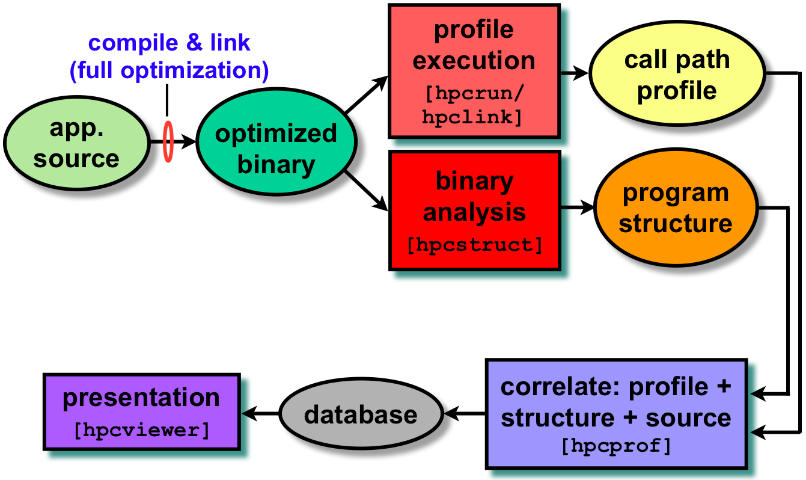

HPCToolkit is an integrated suite of tools for measurement and analysis of program performance on computers ranging from multicore desktop systems to the nation's largest supercomputers.
HPCToolkit provides accurate measurements of a program's work, resource consumption, and inefficiency, correlates these metrics with the program's source code, works with multilingual, fully optimized binaries, has very low measurement overhead, and scales to large parallel systems.
HPCToolkit's measurements provide support for analyzing a program execution cost, inefficiency, and scaling characteristics both within and across nodes of a parallel system.
The figure below provides an overview of HPCToolkit's primary components and their relationships.
- hpcrun: HPCToolkit is based on collecting both highly accurate and highly precise calling-context-sensitive performance measurements for unmodified fully optimized applications.
To collect call path profiles for very low overhead (1-3%), hpcrun uses asynchronous sampling of system timers and performance monitoring unit events.
- hpcstruct: To associate calling-context-sensitive measurements with source code structure, hpcstruct recovers the static program structure of a fully optimized application binary.
In particular, hpcstruct recovers source code procedures and loop nests, detects inlining, and associates procedures and loops with object code.
- hpcprof: To show static program structure -- especially a loop nest -- in its full calling context, hpcprof overlays call path profiles with program structure and correlates the result with source code.
It generates a performance database.
- hpcviewer: hpcviewer interactively presents a performance database in three complementary views.
It is specifically designed to facilitate rapid top-down analysis using metrics that highlight program inefficiency rather than program hot spots.
|

|
Highlighted platforms:
- Linux-x86_64, Linux-IA64 (testing), Linux-Power (testing).
- Including: Cray XT, IBM Blue Gene/P.
HPCToolkit is open-source software released with a BSD-like license.
Page last updated: 2010/03/04